Stiskalnice
Baliranje vseh vrst materialov, od kartona in folije do PET plastenk.
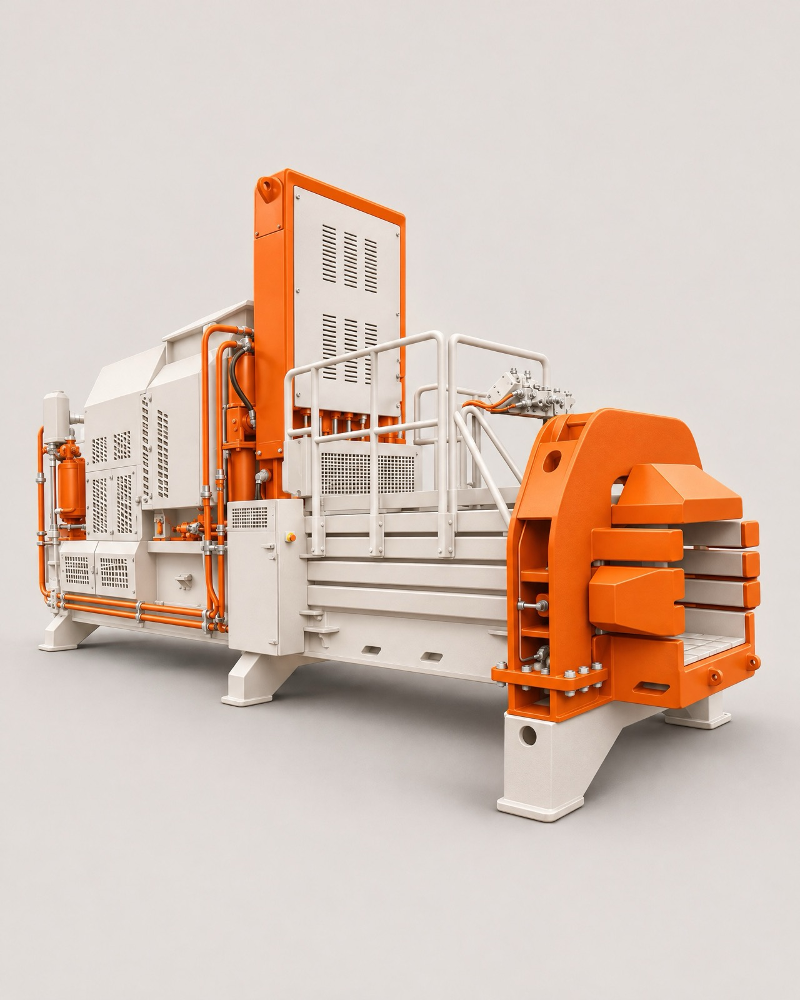
Stiskalnice Horizontalne avtomatizirane stiskalniceVertikalne stiskalnicePET perforatorji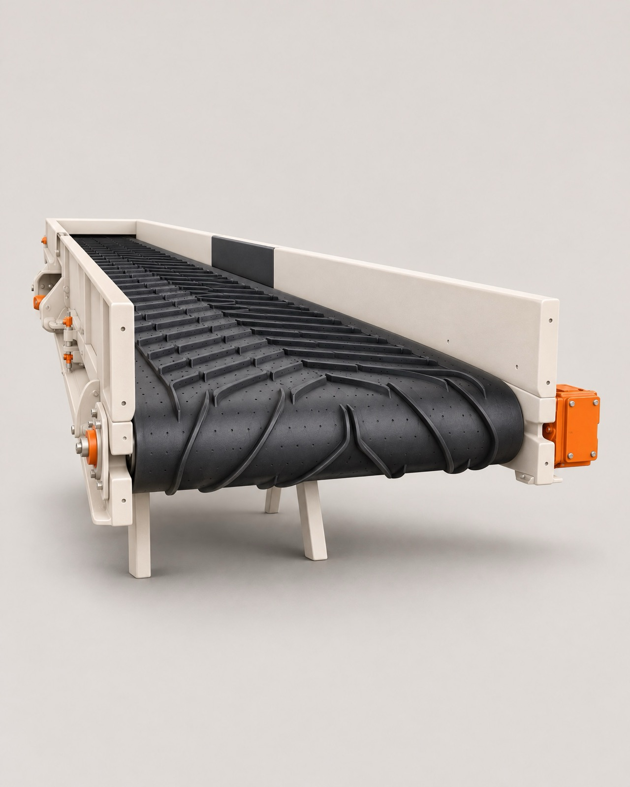
Transportna oprema Transportni trakoviZalogovnikiSistemi za distribucijo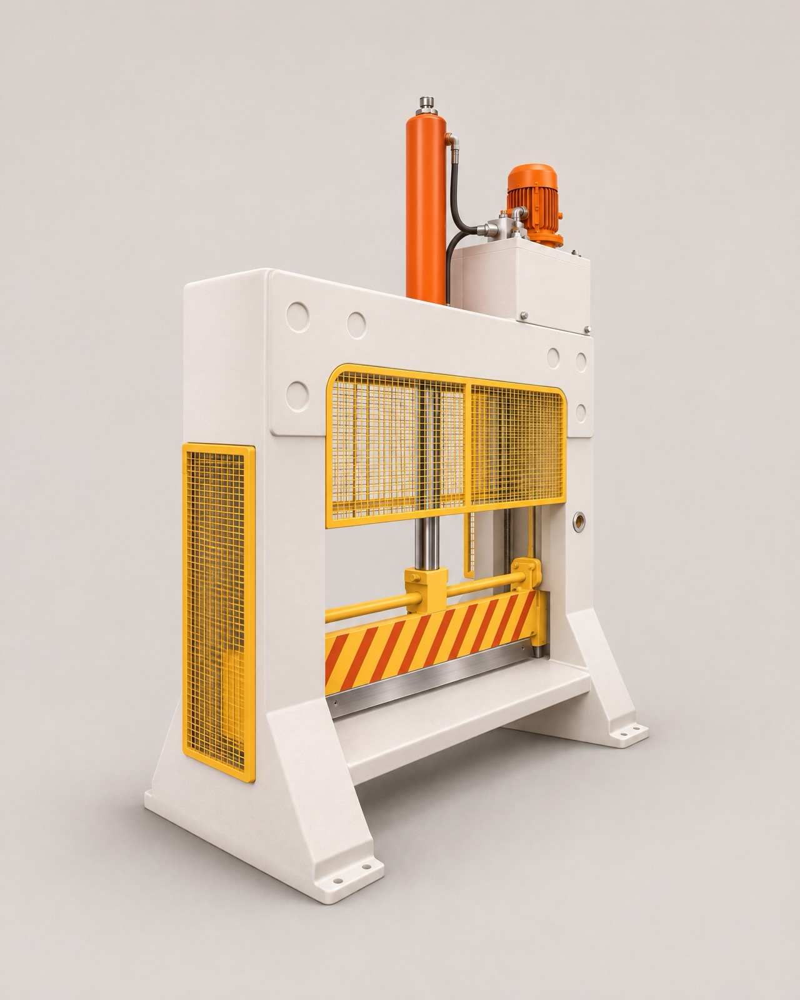
Stroji za razrez GiljotineSistemi za razrez in drobljenje odpadkov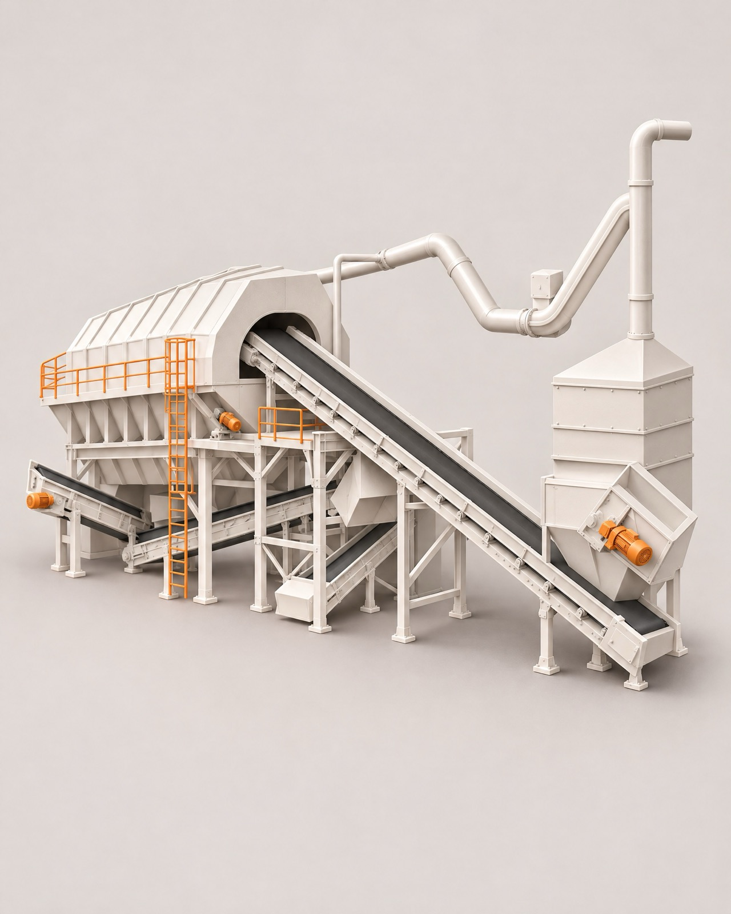
Sistemi za obdelavo odpadkov Obdelava odpadkovProizvodnja SRF in RDF goriv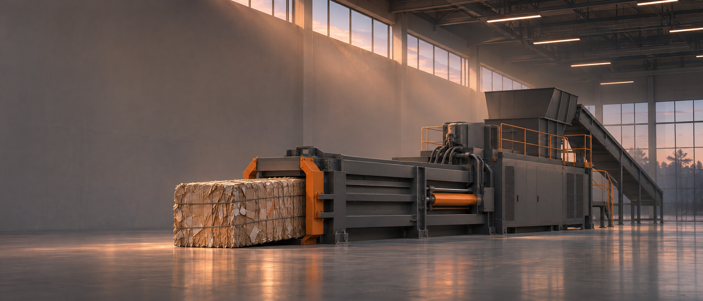
Od svetovanja, načrtovanja in izvedbe do poprodajnih storitev. Stroji in linije, prilagojeni vašim potrebam ravnanja z odpadki.
Osnovna dejavnost podjetja so celoviti sistemi za sortiranje, baliranje, mletje in rezanje odpadnih materialov za vse vrste aplikacij. Transportne tehnike, balirke, stroji za razrez, krmilja in kovinske konstrukcije so plod lastnega razvoja, znanja in proizvodnje.
Zagotavljamo celotno rešitev ali posamezen del opreme. Vsak produkt je unikaten in prilagojen vašim potrebam.
Baliranje vseh vrst materialov, od kartona in folije do PET plastenk.
Trakovi za transport do 40 m in naklon do 36°, za polnjenje linij, balirk in mlinov.
Giljotine od 25 do 60 ton potisne sile in sistemi za drobljenje, tudi po meri.
Popolnoma avtomatizirane linije za sortiranje in proizvodnjo alternativnih goriv.
Glede na vaše želje in vrsto materiala stroj dimenzioniramo, da je izdelan za vaše specifične potrebe.
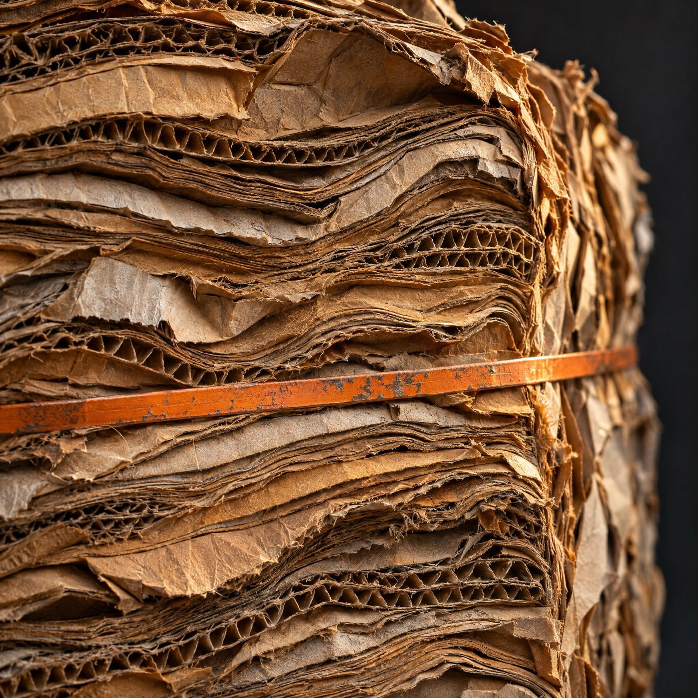
Optimalna komprimiranost, kakovost in teža bal ter nižji stroški logistike.
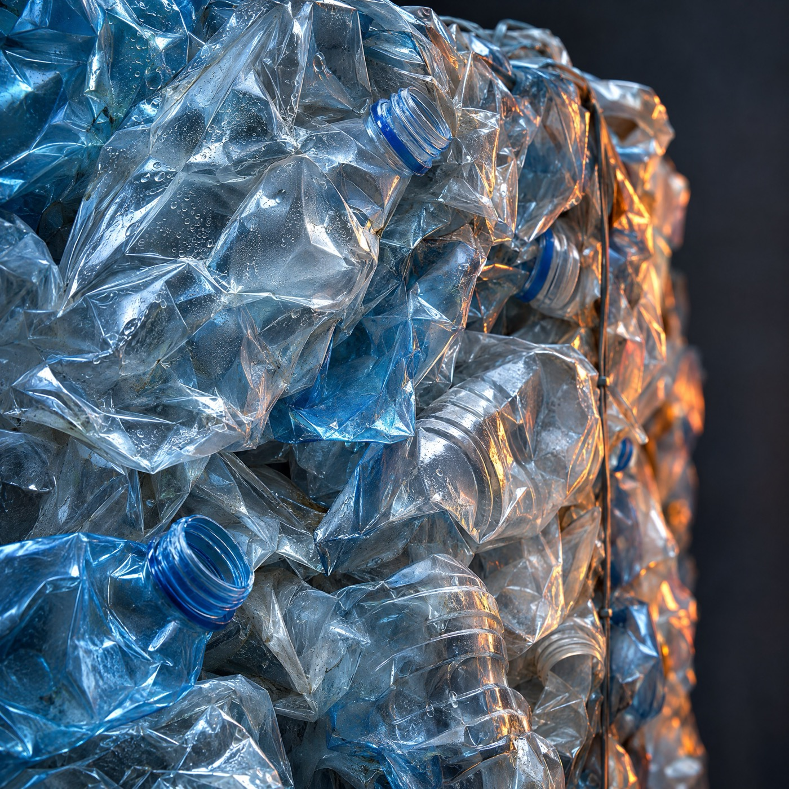
Perforirane plastenke dajo bistveno bolj kompaktne in težje bale.
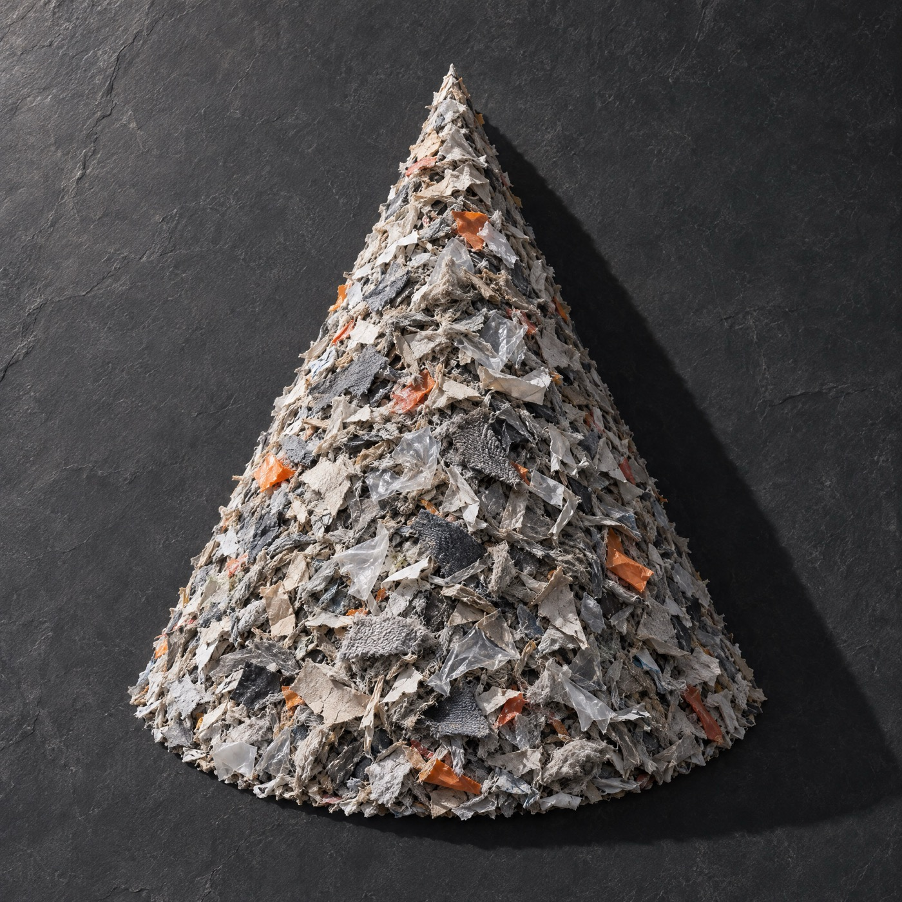
Iz mešanih in industrijskih odpadkov nastane nadomestek fosilnih goriv za toplarne in cementarne.
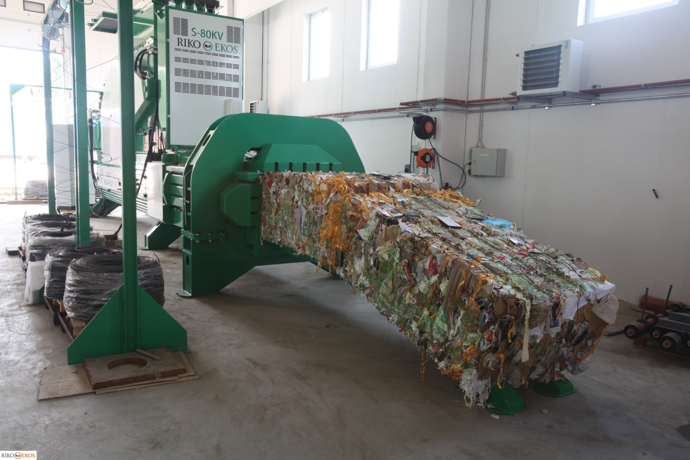
Zavedamo se, da je vaša investicija plod premišljene poslovne odločitve. Zato vgrajujemo komponente višjega kakovostnega razreda, ki služijo dolga leta.
Naši proizvodi in oprema so prilagojeni vašim specifičnim potrebam in so plod nenehnega razvoja. Odlikujemo se po zelo kratkih odzivnih časih za izdelavo idejnih rešitev in zasnov.
Temeljito pregledamo vaše želje in zahteve ter spoznamo vaš proces.
Vhodni material, količine in želena kvaliteta izhodnega materiala.
Izdelamo idejno zasnovo in pripravimo ponudbo.
Načrtovanje linije, krmilja in kovinskih konstrukcij.
Skupaj potrdimo tehnologijo in obseg opreme.
Proizvodnja, dobava in montaža opreme na ključ.
Šolanje uporabnikov za varno in učinkovito delo.
Vzdrževanje, rezervni deli in servis v 24 urah.
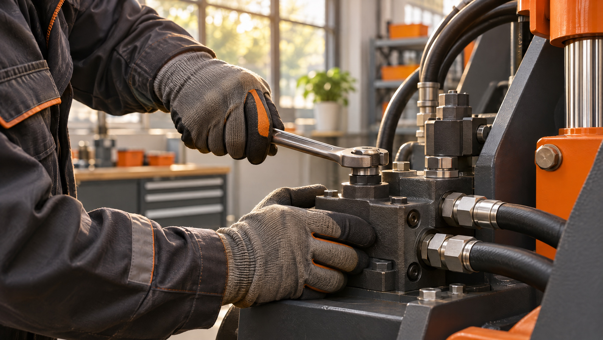
Naše vodilo je usmeritev v prihodnost, razvoj in učinkovito reševanje okoljske problematike. Pri tem združujemo bogate izkušnje domačih in tujih strokovnjakov.
Prilagodimo se vašim željam in potrebam. Odlikujemo se po kratkih odzivnih časih za izdelavo idejnih rešitev in zasnov.
Usposobljena servisna služba zagotavlja hiter in kakovosten servis na območju Slovenije in EU. Odzivni čas je 24 ur, s servisno pogodbo 2 do 4 ure.
Težimo k čim nižjim stroškom vzdrževanja in obratovanja, z vidika energetske učinkovitosti in vzdrževanja.
Odlično razmerje med kvaliteto in ceno. Najboljši produkt na trgu po ugodni ceni.
Komunalna podjetja, zbiralci odpadne embalaže, reciklažna podjetja, papirnice in cementarne doma in v EU.
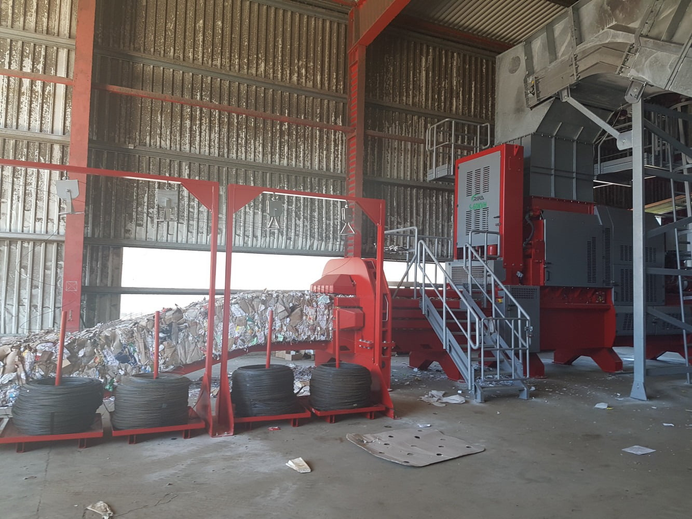
Začetek zaznamuje proizvodnja letne in zimske komunalne opreme, stiskalnic in giljotin.
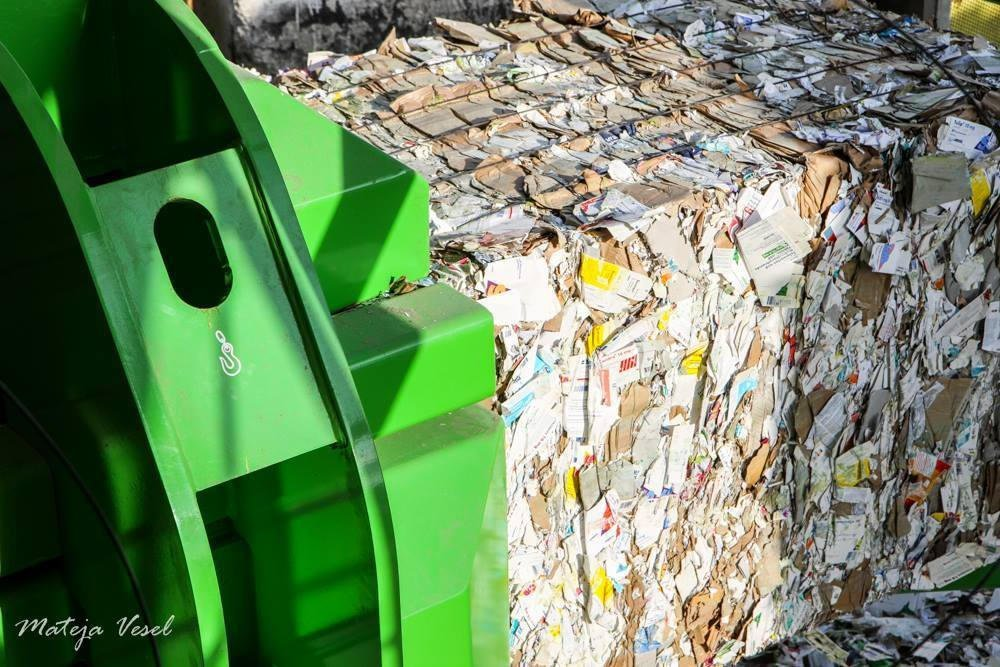
Aktivno se prične proizvodnja opreme, ki je plod lastnega razvoja: transportna tehnika, stroji za razrez in kovinske konstrukcije.
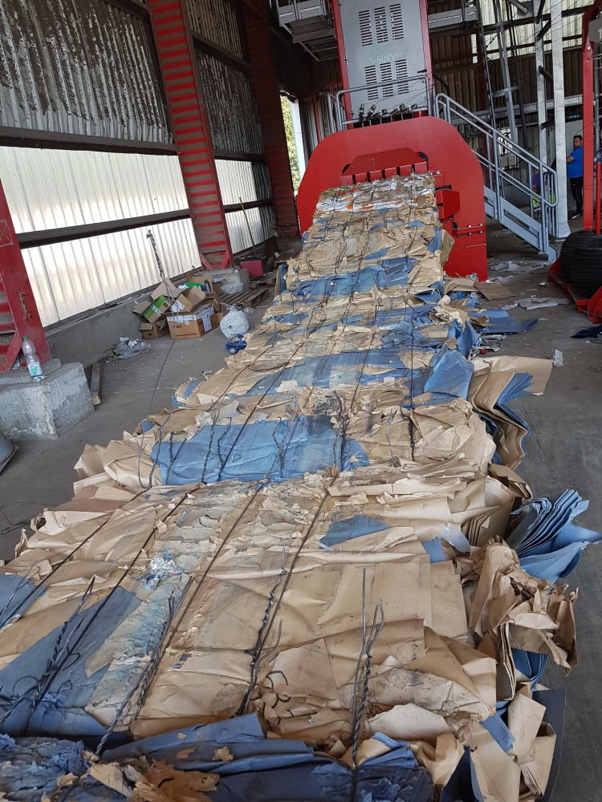
Konfiguriramo prve sortirne linije, ki delujejo kontinuirano z različnimi stroji in opremo. Sledijo investicije v proizvodne procese in širitev kapacitet.
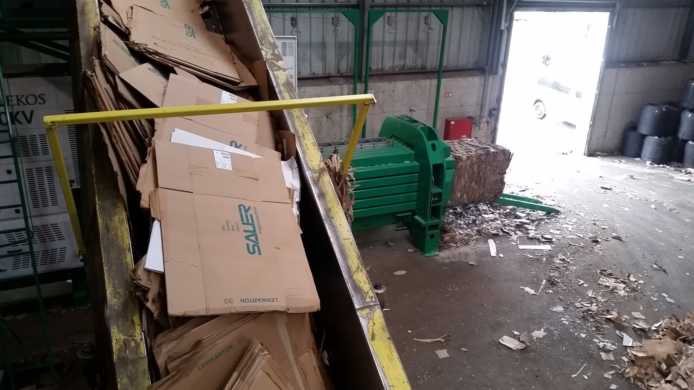
Vsak produkt je na svoj način unikaten, saj stroj izdelamo glede na delovni proces in material, ki ga stranka predeluje.
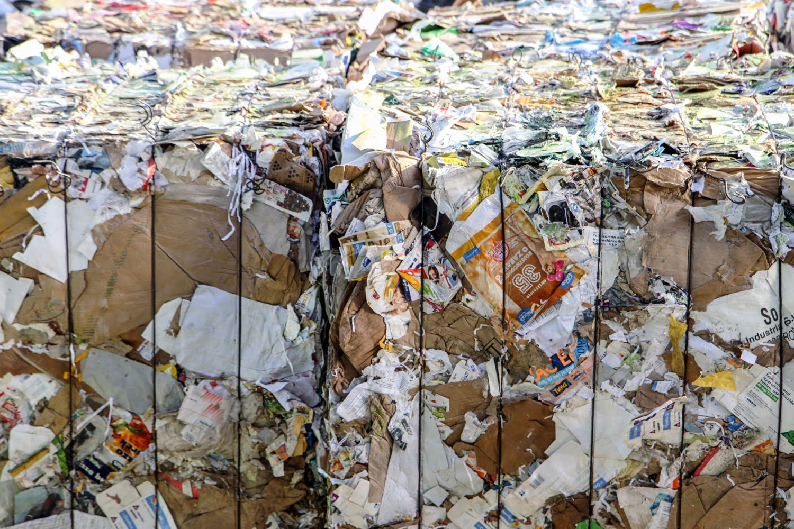
Prvi večji projekti dobav ekološke opreme in linij doma in v državah EU. Gradnja novih proizvodnih prostorov in modernizacija opreme.
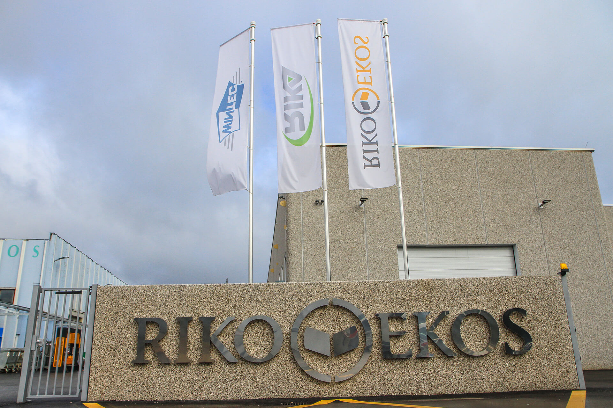
Rešitve na ključ: tehnologija, načrti in prilagojena oprema za predelavo, reciklažo in obdelavo materialov. Začne se večja investicija v nove prostore.
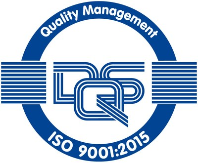
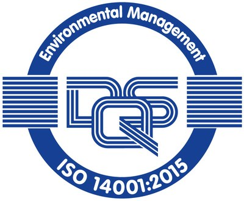
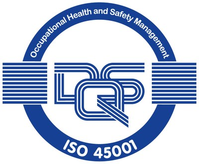
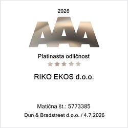
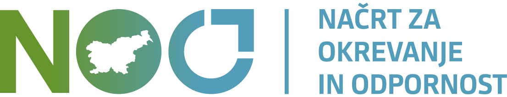
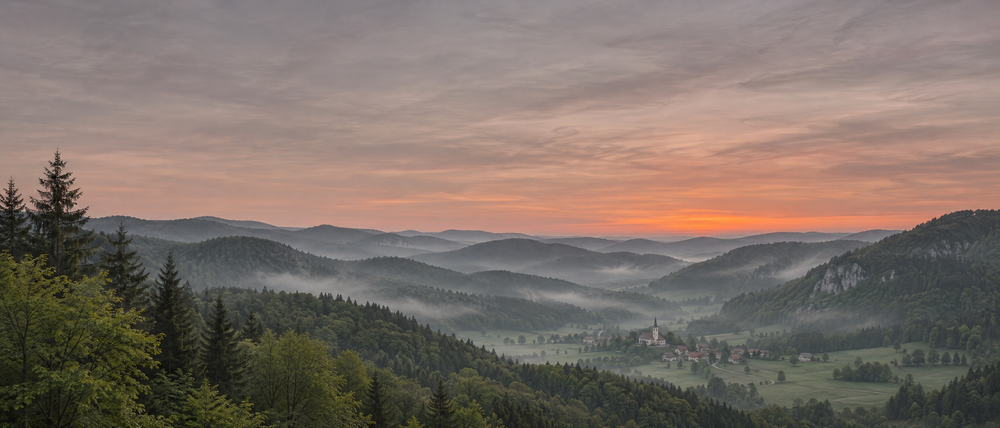
+386 1 836 70 56info@riko-ekos.si
Riko Ekos d.o.o.
Mali Log 2a
SI-1318 Loški Potok
Slovenija